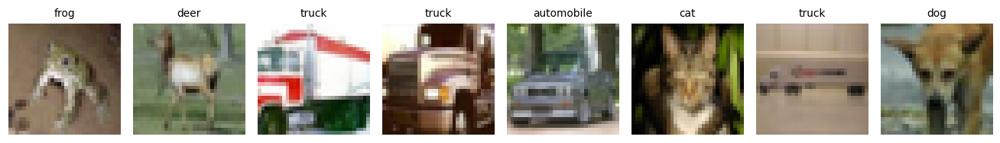
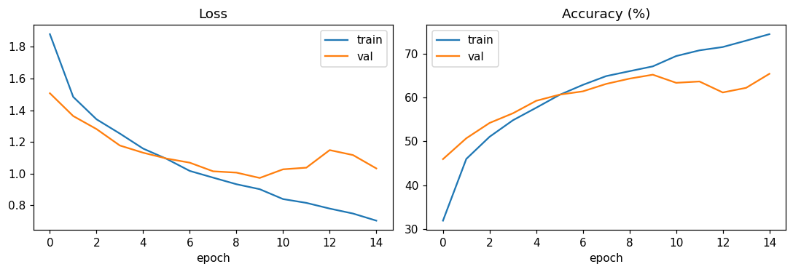
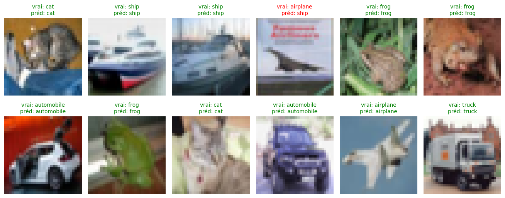
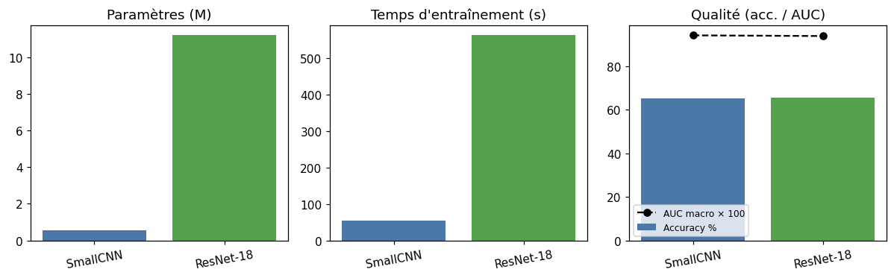

PyTorch : 2.4.1+cu121
Device : cuda
GPU : Quadro P1000PyTorch pour les réseaux de neurones
De la convolution brute à un petit CNN entraîné sur CIFAR-10
Intro
Ce notebook est une introduction autonome à PyTorch : on n’utilise aucune classe spécifique à GMIC. À la fin tu sauras :
- manipuler des tenseurs et l’auto-différentiation,
- écrire un
nn.Moduleet faire passer des données dedans, - comprendre ce que fait une
Conv2d(filtre, stride, padding), - entraîner un petit CNN sur CIFAR-10 avec une boucle forward / backward,
- comparer un petit CNN maison avec un ResNet-18 standard, entraîné à la bonne résolution.
C’est le préquel naturel de la trilogie GMIC (basicblock_gmic.qmd, globalnetwork_gmic.qmd, pipeline_showcase_gmic.qmd).
Partie I — Un tenseur, c’est un tableau avec des super-pouvoirs
Un tenseur PyTorch ressemble à un np.array, mais il sait :
- tourner sur GPU (
.to("cuda")) ; - enregistrer ses opérations pour calculer automatiquement les dérivées via
.backward()— c’est l’autograd, le cœur de l’entraînement.
a = torch.tensor([[1., 2.], [3., 4.]])
b = torch.tensor([[0., 1.], [1., 0.]])
print("a + b =\n", a + b)
print("a @ b =\n", a @ b) # produit matriciel
print("a.shape =", a.shape, " | dtype =", a.dtype)a + b =
tensor([[1., 3.],
[4., 4.]])
a @ b =
tensor([[2., 1.],
[4., 3.]])
a.shape = torch.Size([2, 2]) | dtype = torch.float32Autograd en une image
On définit y = x² + 3x + 2, on demande à PyTorch de tracer les gradients, et on appelle .backward(). La dérivée analytique est dy/dx = 2x + 3. En x = 4 on attend donc 11.
x = torch.tensor(4.0, requires_grad=True)
y = x ** 2 + 3 * x + 2
y.backward()
print(f"y = {y.item()}")
print(f"dy/dx en x=4 (calculé par PyTorch) : {x.grad.item()}")
print(f"dy/dx en x=4 (2x + 3, vérité) : {2*4 + 3}")y = 30.0
dy/dx en x=4 (calculé par PyTorch) : 11.0
dy/dx en x=4 (2x + 3, vérité) : 11C’est exactement ce mécanisme qui permet à l’entraînement d’un réseau de neurones de fonctionner : on calcule la loss, on fait loss.backward(), et PyTorch dépose dans chaque paramètre son gradient — prêt à être utilisé par l’optimiseur.
Partie II — Mon premier nn.Module
Un module PyTorch, c’est :
- une classe qui hérite de
nn.Module; - un
__init__qui déclare les couches avec des poids apprenables ; - une méthode
forward(x)qui décrit le calcul.
Construisons le plus petit réseau possible : une régression linéaire y = w·x + b.
class MiniLinear(nn.Module):
def __init__(self):
super().__init__()
self.linear = nn.Linear(in_features=1, out_features=1)
def forward(self, x):
return self.linear(x)
net = MiniLinear()
print(net)
print("Paramètres :", list(net.parameters()))MiniLinear(
(linear): Linear(in_features=1, out_features=1, bias=True)
)
Paramètres : [Parameter containing:
tensor([[-0.0075]], requires_grad=True), Parameter containing:
tensor([0.5364], requires_grad=True)]nn.Linear(1, 1) a créé deux tenseurs apprenables : un poids w et un biais b, initialisés aléatoirement. Dès qu’on appellera net.parameters() dans un optimiseur, ces deux valeurs seront ajustées par la descente de gradient.
Partie III — nn.Conv2d, la brique des CNN
Pour classer une image, on ne peut pas traiter chaque pixel comme une feature indépendante : il y en a trop, et surtout l’information est locale (un œil, une roue, une tumeur). La convolution résout ce problème.
Une Conv2d(in_channels=3, out_channels=8, kernel_size=3) fait glisser 8 filtres de taille 3×3 sur l’image d’entrée (3 canaux RGB) et produit 8 cartes d’activation qui encodent « où chaque filtre s’allume ».
Quatre filtres classiques sur une vraie image
Plutôt que de bricoler une image synthétique, on prend directement une image CIFAR-10 (on reviendra sur le dataset en Partie IV) et on lui applique quatre filtres codés à la main connus depuis les années 70 en traitement d’image :
- Sobel X — dérivée horizontale, allume les bords verticaux
- Sobel Y — dérivée verticale, allume les bords horizontaux
- Laplacien — somme des dérivées secondes, allume tous les contours
- Moyenneur 3×3 — lisse l’image (flou)
CIFAR_ROOT = os.path.expanduser("~/.cache/cifar10")
_demo_ds = datasets.CIFAR10(root=CIFAR_ROOT, train=True,
transform=transforms.ToTensor(), download=True)
# On cherche une image de voiture (classe 1) pour avoir des bords nets
for _img, _lbl in _demo_ds:
if _lbl == 1:
img_rgb = _img # (3, 32, 32) en [0, 1]
break
img_gray = img_rgb.mean(0, keepdim=True).unsqueeze(0) # (1, 1, 32, 32)
filters = {
"Sobel X": torch.tensor([[-1, 0, 1], [-2, 0, 2], [-1, 0, 1]], dtype=torch.float32),
"Sobel Y": torch.tensor([[-1, -2, -1], [0, 0, 0], [1, 2, 1]], dtype=torch.float32),
"Laplacien": torch.tensor([[0, -1, 0], [-1, 4, -1], [0, -1, 0]], dtype=torch.float32),
"Flou 3x3": torch.ones(3, 3) / 9.0,
}
fig, axes = plt.subplots(1, 5, figsize=(14, 3))
axes[0].imshow(img_rgb.permute(1, 2, 0)); axes[0].set_title("Entrée RGB")
axes[0].axis("off")
for ax, (name, k) in zip(axes[1:], filters.items()):
conv = nn.Conv2d(1, 1, kernel_size=3, padding=1, bias=False)
with torch.no_grad():
conv.weight.copy_(k.view(1, 1, 3, 3))
feat = conv(img_gray)[0, 0].detach()
ax.imshow(feat, cmap="gray"); ax.set_title(name); ax.axis("off")
plt.tight_layout(); plt.show()Files already downloaded and verified
Chaque filtre « illumine » une caractéristique différente de la même image. La clé pédagogique : dans un vrai CNN, ces coefficients 3×3 ne sont pas codés à la main — ils sont appris par descente de gradient pour optimiser la tâche finale.
Un Conv2d produit plusieurs cartes en parallèle
Quand on écrit nn.Conv2d(3, 8, kernel_size=3), PyTorch crée 8 filtres indépendants appliqués à la même image et produit 8 cartes d’activation. Avant entraînement, ces filtres sont initialisés aléatoirement : chaque carte ressemble à du bruit vaguement structuré.
torch.manual_seed(0)
conv = nn.Conv2d(3, 8, kernel_size=3, padding=1, bias=False)
with torch.no_grad():
feat = conv(img_rgb.unsqueeze(0)) # (1, 8, 32, 32)
fig, axes = plt.subplots(1, 9, figsize=(14, 2))
axes[0].imshow(img_rgb.permute(1, 2, 0)); axes[0].set_title("Entrée", fontsize=9)
axes[0].axis("off")
for i in range(8):
axes[i + 1].imshow(feat[0, i].detach(), cmap="gray")
axes[i + 1].set_title(f"Canal {i}", fontsize=9); axes[i + 1].axis("off")
plt.tight_layout(); plt.show()
Après entraînement, chacun de ces 8 canaux aurait convergé vers un motif utile (bord à 30°, texture granuleuse, tache rouge…). C’est ce que Zeiler & Fergus (2014) ont visualisé pour AlexNet et qui a convaincu la communauté que les CNN apprenaient une hiérarchie de features — bords → textures → parties → objets.
Effet des hyperparamètres
| Paramètre | Rôle | Effet sur la shape |
|---|---|---|
kernel_size |
taille du filtre | plus grand = champ réceptif plus large |
stride |
pas de déplacement | stride 2 divise H et W par ~2 |
padding |
zéros ajoutés aux bords | préserve la shape d’entrée |
out_channels |
nombre de filtres | dimension du canal en sortie |
x = torch.randn(1, 3, 32, 32) # batch 1, 3 canaux, 32x32
for (k, s, p) in [(3, 1, 1), (3, 2, 1), (5, 1, 0), (7, 2, 3)]:
c = nn.Conv2d(3, 8, kernel_size=k, stride=s, padding=p)
out = c(x)
print(f"kernel={k} stride={s} padding={p} → in {tuple(x.shape)} out {tuple(out.shape)}")kernel=3 stride=1 padding=1 → in (1, 3, 32, 32) out (1, 8, 32, 32)
kernel=3 stride=2 padding=1 → in (1, 3, 32, 32) out (1, 8, 16, 16)
kernel=5 stride=1 padding=0 → in (1, 3, 32, 32) out (1, 8, 28, 28)
kernel=7 stride=2 padding=3 → in (1, 3, 32, 32) out (1, 8, 16, 16)Partie IV — CIFAR-10 et le DataLoader
CIFAR-10 = 60 000 images 32×32 en couleur, 10 classes (avion, voiture, chat…). torchvision la télécharge automatiquement, et un DataLoader nous la sert par mini-batches.
CIFAR_ROOT = os.path.expanduser("~/.cache/cifar10")
transform = transforms.Compose([
transforms.ToTensor(), # [0, 255] -> [0, 1], (3, 32, 32)
transforms.Normalize((0.5, 0.5, 0.5),
(0.5, 0.5, 0.5)), # centre les valeurs sur ~0
])
train_full = datasets.CIFAR10(root=CIFAR_ROOT, train=True, transform=transform, download=True)
test_full = datasets.CIFAR10(root=CIFAR_ROOT, train=False, transform=transform, download=True)
# Sous-échantillons pour garder le notebook rapide
train_ds = Subset(train_full, range(10_000))
test_ds = Subset(test_full, range(2_000))
train_loader = DataLoader(train_ds, batch_size=128, shuffle=True, num_workers=0)
test_loader = DataLoader(test_ds, batch_size=256, shuffle=False, num_workers=0)
classes = train_full.classes
print("Classes :", classes)
print(f"Train subset : {len(train_ds)} images | Test subset : {len(test_ds)} images")
# Aperçu
imgs, labels = next(iter(train_loader))
fig, axes = plt.subplots(1, 8, figsize=(12, 2))
for i, ax in enumerate(axes):
img = imgs[i].permute(1, 2, 0).numpy() * 0.5 + 0.5 # dé-normalisation
ax.imshow(img); ax.set_title(classes[labels[i]], fontsize=9); ax.axis("off")
plt.tight_layout(); plt.show()Files already downloaded and verified
Files already downloaded and verified
Classes : ['airplane', 'automobile', 'bird', 'cat', 'deer', 'dog', 'frog', 'horse', 'ship', 'truck']
Train subset : 10000 images | Test subset : 2000 images
Un DataLoader ne charge pas tout en mémoire : il pioche par batch, mélange (shuffle=True) pour éviter que le réseau mémorise l’ordre, et peut utiliser plusieurs workers en parallèle.
Partie V — Architecture d’un petit CNN
On construit un CNN simple à deux étages convolutifs, suivis d’une tête fully-connected. On suit le schéma canonique :
Conv → BatchNorm → ReLU → MaxPool × N fois
puis Flatten → Linear → ReLU → Linear(10)class SmallCNN(nn.Module):
def __init__(self, num_classes: int = 10):
super().__init__()
# Bloc 1 : 3→32 canaux, on garde 32x32 puis pool → 16x16
self.conv1 = nn.Conv2d(3, 32, kernel_size=3, padding=1)
self.bn1 = nn.BatchNorm2d(32)
# Bloc 2 : 32→64 canaux, pool → 8x8
self.conv2 = nn.Conv2d(32, 64, kernel_size=3, padding=1)
self.bn2 = nn.BatchNorm2d(64)
self.pool = nn.MaxPool2d(2, 2)
# Tête
self.fc1 = nn.Linear(64 * 8 * 8, 128)
self.fc2 = nn.Linear(128, num_classes)
self.dropout = nn.Dropout(0.3)
def forward(self, x):
x = self.pool(F.relu(self.bn1(self.conv1(x)))) # (N, 32, 16, 16)
x = self.pool(F.relu(self.bn2(self.conv2(x)))) # (N, 64, 8, 8)
x = x.view(x.size(0), -1) # flatten (N, 4096)
x = self.dropout(F.relu(self.fc1(x))) # (N, 128)
return self.fc2(x) # (N, 10)
model = SmallCNN().to(DEVICE)
print(model)
n_params = sum(p.numel() for p in model.parameters())
print(f"\nParamètres totaux : {n_params:,} ({n_params/1e6:.2f} M)")SmallCNN(
(conv1): Conv2d(3, 32, kernel_size=(3, 3), stride=(1, 1), padding=(1, 1))
(bn1): BatchNorm2d(32, eps=1e-05, momentum=0.1, affine=True, track_running_stats=True)
(conv2): Conv2d(32, 64, kernel_size=(3, 3), stride=(1, 1), padding=(1, 1))
(bn2): BatchNorm2d(64, eps=1e-05, momentum=0.1, affine=True, track_running_stats=True)
(pool): MaxPool2d(kernel_size=2, stride=2, padding=0, dilation=1, ceil_mode=False)
(fc1): Linear(in_features=4096, out_features=128, bias=True)
(fc2): Linear(in_features=128, out_features=10, bias=True)
(dropout): Dropout(p=0.3, inplace=False)
)
Paramètres totaux : 545,290 (0.55 M)Vérifier les shapes à la main
On fait passer une image fictive et on imprime la shape à chaque étage. Si un nombre ne colle pas avec fc1, la boucle d’entraînement plantera sur le view — c’est l’erreur la plus courante en PyTorch.
dummy = torch.randn(1, 3, 32, 32).to(DEVICE)
h = model.pool(F.relu(model.bn1(model.conv1(dummy)))); print("après bloc 1 :", tuple(h.shape))
h = model.pool(F.relu(model.bn2(model.conv2(h)))); print("après bloc 2 :", tuple(h.shape))
h = h.view(h.size(0), -1); print("après flatten :", tuple(h.shape))
h = F.relu(model.fc1(h)); print("après fc1 :", tuple(h.shape))
h = model.fc2(h); print("après fc2 :", tuple(h.shape))après bloc 1 : (1, 32, 16, 16)
après bloc 2 : (1, 64, 8, 8)
après flatten : (1, 4096)
après fc1 : (1, 128)
après fc2 : (1, 10)Partie VI — La boucle d’entraînement
Les quatre lignes magiques qui reviennent dans absolument tout entraînement PyTorch :
pred = model(x) # (1) forward
loss = criterion(pred, y) # (2) comparer à la vérité
loss.backward() # (3) calculer les gradients
optimizer.step() # (4) mettre à jour les poids
optimizer.zero_grad() # (5) remettre à zéro pour le prochain batchEt c’est tout. On l’emballe dans deux boucles imbriquées : une sur les époques (passes complètes sur le dataset), une sur les batches.
def train_one_epoch(model, loader, optimizer, criterion, device):
model.train()
total, correct, running_loss = 0, 0, 0.0
for x, y in loader:
x, y = x.to(device), y.to(device)
optimizer.zero_grad()
pred = model(x)
loss = criterion(pred, y)
loss.backward()
optimizer.step()
running_loss += loss.item() * x.size(0)
correct += (pred.argmax(1) == y).sum().item()
total += x.size(0)
return running_loss / total, correct / total
@torch.no_grad()
def evaluate(model, loader, criterion, device):
model.eval()
total, correct, running_loss = 0, 0, 0.0
for x, y in loader:
x, y = x.to(device), y.to(device)
pred = model(x)
running_loss += criterion(pred, y).item() * x.size(0)
correct += (pred.argmax(1) == y).sum().item()
total += x.size(0)
return running_loss / total, correct / total
criterion = nn.CrossEntropyLoss()
optimizer = torch.optim.Adam(model.parameters(), lr=1e-3)
history = {"train_loss": [], "train_acc": [], "val_loss": [], "val_acc": []}
EPOCHS = 15
t0 = time.time()
for epoch in range(1, EPOCHS + 1):
tr_loss, tr_acc = train_one_epoch(model, train_loader, optimizer, criterion, DEVICE)
vl_loss, vl_acc = evaluate(model, test_loader, criterion, DEVICE)
history["train_loss"].append(tr_loss); history["train_acc"].append(tr_acc)
history["val_loss"].append(vl_loss); history["val_acc"].append(vl_acc)
print(f"Epoch {epoch}/{EPOCHS} "
f"train loss={tr_loss:.3f} acc={tr_acc*100:.1f}% "
f"val loss={vl_loss:.3f} acc={vl_acc*100:.1f}%")
smallcnn_time = time.time() - t0
print(f"\nTemps total : {smallcnn_time:.1f} s")Epoch 1/15 train loss=1.880 acc=31.9% val loss=1.507 acc=46.0%
Epoch 2/15 train loss=1.484 acc=46.0% val loss=1.363 acc=50.7%
Epoch 3/15 train loss=1.343 acc=51.0% val loss=1.281 acc=54.2%
Epoch 4/15 train loss=1.253 acc=54.8% val loss=1.177 acc=56.4%
Epoch 5/15 train loss=1.158 acc=57.7% val loss=1.132 acc=59.2%
Epoch 6/15 train loss=1.093 acc=60.6% val loss=1.095 acc=60.7%
Epoch 7/15 train loss=1.017 acc=62.9% val loss=1.069 acc=61.4%
Epoch 8/15 train loss=0.974 acc=64.9% val loss=1.014 acc=63.1%
Epoch 9/15 train loss=0.933 acc=66.0% val loss=1.006 acc=64.3%
Epoch 10/15 train loss=0.901 acc=67.1% val loss=0.972 acc=65.2%
Epoch 11/15 train loss=0.839 acc=69.5% val loss=1.027 acc=63.3%
Epoch 12/15 train loss=0.815 acc=70.8% val loss=1.037 acc=63.6%
Epoch 13/15 train loss=0.779 acc=71.5% val loss=1.148 acc=61.2%
Epoch 14/15 train loss=0.748 acc=73.0% val loss=1.117 acc=62.2%
Epoch 15/15 train loss=0.703 acc=74.4% val loss=1.033 acc=65.4%
Temps total : 53.7 sCourbes d’apprentissage
fig, ax = plt.subplots(1, 2, figsize=(10, 3.5))
ax[0].plot(history["train_loss"], label="train"); ax[0].plot(history["val_loss"], label="val")
ax[0].set_title("Loss"); ax[0].set_xlabel("epoch"); ax[0].legend()
ax[1].plot([a*100 for a in history["train_acc"]], label="train")
ax[1].plot([a*100 for a in history["val_acc"]], label="val")
ax[1].set_title("Accuracy (%)"); ax[1].set_xlabel("epoch"); ax[1].legend()
plt.tight_layout(); plt.show()
Si tout s’est bien passé : loss qui descend, accuracy qui monte. Avec 10 000 images et 5 époques, on tourne autour de 60-65 % sur CIFAR-10 — très loin de l’état de l’art (~99 %), mais c’est déjà 6× mieux que le hasard (10 %) pour un réseau de 500k paramètres qu’on a entraîné en moins d’une minute.
Pourquoi « hasard = 10 % » ? CIFAR-10 contient 10 classes équilibrées (1000 images par classe dans le test set). Un classifieur qui répondrait au hasard tomberait juste 1 fois sur 10, soit 10 %. C’est le baseline aléatoire : tout modèle qui fait ≤ 10 % n’a rien appris. Pour un problème à N classes équilibrées le baseline est 1/N ; pour du binaire, 50 %.
Partie VII — Prédictions visualisées
model.eval()
imgs, labels = next(iter(test_loader))
with torch.no_grad():
preds = model(imgs.to(DEVICE)).argmax(1).cpu()
fig, axes = plt.subplots(2, 6, figsize=(12, 5))
for i, ax in enumerate(axes.flatten()):
img = imgs[i].permute(1, 2, 0).numpy() * 0.5 + 0.5
ok = preds[i].item() == labels[i].item()
color = "green" if ok else "red"
ax.imshow(img); ax.axis("off")
ax.set_title(f"vrai: {classes[labels[i]]}\npréd: {classes[preds[i]]}",
fontsize=9, color=color)
plt.tight_layout(); plt.show()
Partie VIII — ResNet-18 de torchvision, entraîné à sa résolution
torchvision.models livre des dizaines d’architectures prêtes à l’emploi. On instancie un ResNet-18 (He et al. 2015, 18 couches) sans poids pré-entraînés et on lui donne des images à la bonne résolution.
Pourquoi la résolution change tout
ResNet-18 est conçu pour ImageNet (224×224). Avec des entrées 32×32, son premier Conv2d (7×7, stride 2) + MaxPool réduit immédiatement l’image à 8×8, puis les quatre blocs résiduels la compressent jusqu’à 1×1 avant le classificateur — toute l’information spatiale est perdue.
On va upsampler les images CIFAR-10 à 96×96 (interpolation bicubique, 3× la taille d’origine). Ce n’est pas la résolution canonique (224), mais c’est un bon compromis temps/qualité :
| Étage ResNet-18 | images 32×32 | images 96×96 |
|---|---|---|
Après conv1 + maxpool |
8×8 | 24×24 |
Après layer2 (stride 2) |
4×4 | 12×12 |
Après layer3 (stride 2) |
2×2 | 6×6 |
Après layer4 (stride 2) |
1×1 | 3×3 |
À 96×96 le Global Avg Pool final travaille sur 9 positions spatiales au lieu d’une seule — le réseau a vraiment quelque chose à analyser.
rn18_transform = transforms.Compose([
transforms.Resize((96, 96),
interpolation=transforms.InterpolationMode.BICUBIC),
transforms.ToTensor(),
transforms.Normalize((0.5, 0.5, 0.5), (0.5, 0.5, 0.5)),
])
rn18_train_ds = Subset(datasets.CIFAR10(root=CIFAR_ROOT, train=True,
transform=rn18_transform, download=True),
range(10_000))
rn18_test_ds = Subset(datasets.CIFAR10(root=CIFAR_ROOT, train=False,
transform=rn18_transform, download=True),
range(2_000))
rn18_train_loader = DataLoader(rn18_train_ds, batch_size=64, shuffle=True, num_workers=0)
rn18_test_loader = DataLoader(rn18_test_ds, batch_size=128, shuffle=False, num_workers=0)
print(f"Taille des batches : {next(iter(rn18_train_loader))[0].shape}")Files already downloaded and verified
Files already downloaded and verified
Taille des batches : torch.Size([64, 3, 96, 96])Architecture
from torchvision.models import resnet18
resnet18_model = resnet18(weights=None, num_classes=10).to(DEVICE)
n_rn18 = sum(p.numel() for p in resnet18_model.parameters())
print(f"ResNet-18 : {n_rn18:,} paramètres ({n_rn18/1e6:.2f} M)")
print(resnet18_model.conv1)ResNet-18 : 11,181,642 paramètres (11.18 M)
Conv2d(3, 64, kernel_size=(7, 7), stride=(2, 2), padding=(3, 3), bias=False)Entraînement (15 epochs, images 96×96)
rn18_optimizer = torch.optim.Adam(resnet18_model.parameters(), lr=1e-3)
t0 = time.time()
for epoch in range(1, EPOCHS + 1):
tr_loss, tr_acc = train_one_epoch(resnet18_model, rn18_train_loader,
rn18_optimizer, criterion, DEVICE)
vl_loss, vl_acc = evaluate(resnet18_model, rn18_test_loader, criterion, DEVICE)
print(f"Epoch {epoch}/{EPOCHS} train acc={tr_acc*100:.1f}% val acc={vl_acc*100:.1f}%")
resnet18_time = time.time() - t0
print(f"\nTemps total : {resnet18_time:.1f} s")Epoch 1/15 train acc=40.0% val acc=41.6%
Epoch 2/15 train acc=52.8% val acc=53.4%
Epoch 3/15 train acc=60.1% val acc=56.5%
Epoch 4/15 train acc=67.9% val acc=60.7%
Epoch 5/15 train acc=72.8% val acc=56.0%
Epoch 6/15 train acc=79.4% val acc=60.7%
Epoch 7/15 train acc=85.1% val acc=63.2%
Epoch 8/15 train acc=90.3% val acc=61.7%
Epoch 9/15 train acc=92.5% val acc=63.0%
Epoch 10/15 train acc=94.3% val acc=62.1%
Epoch 11/15 train acc=96.5% val acc=64.1%
Epoch 12/15 train acc=97.3% val acc=65.5%
Epoch 13/15 train acc=97.1% val acc=63.1%
Epoch 14/15 train acc=96.8% val acc=63.7%
Epoch 15/15 train acc=97.5% val acc=65.7%
Temps total : 563.3 sPartie IX — Tableau comparatif
On mesure l’accuracy top-1 et l’AUC ROC macro sur le test set. SmallCNN est évalué sur ses images 32×32, ResNet-18 sur ses images 96×96 — chaque modèle est jugé dans les conditions où il a été entraîné.
from sklearn.metrics import roc_auc_score, accuracy_score
@torch.no_grad()
def compute_metrics(net, loader, device):
net.eval()
all_probs, all_labels = [], []
for x, y in loader:
probs = F.softmax(net(x.to(device)), dim=1).cpu().numpy()
all_probs.append(probs); all_labels.append(y.numpy())
probs = np.concatenate(all_probs); labels = np.concatenate(all_labels)
acc = accuracy_score(labels, probs.argmax(1))
auc = roc_auc_score(labels, probs, multi_class="ovr", average="macro")
return acc, auc
rows = []
for name, net, loader, t in [
("SmallCNN", model, test_loader, smallcnn_time),
("ResNet-18", resnet18_model, rn18_test_loader, resnet18_time),
]:
acc, auc = compute_metrics(net, loader, DEVICE)
n = sum(p.numel() for p in net.parameters())
rows.append((name, n, t, acc, auc))
print(f"{'Modèle':<13}{'Paramètres':>14}{'Temps (s)':>12}{'Accuracy':>12}{'AUC macro':>12}")
print("-" * 63)
for name, n, t, acc, auc in rows:
print(f"{name:<13}{n:>14,}{t:>12.1f}{acc*100:>11.1f}%{auc:>12.3f}")Modèle Paramètres Temps (s) Accuracy AUC macro
---------------------------------------------------------------
SmallCNN 545,290 53.7 65.4% 0.942
ResNet-18 11,181,642 563.3 65.7% 0.939fig, ax = plt.subplots(1, 3, figsize=(11, 3.5))
names = [r[0] for r in rows]
colors = ["#4C78A8", "#54A24B"]
ax[0].bar(names, [r[1]/1e6 for r in rows], color=colors)
ax[0].set_title("Paramètres (M)")
ax[1].bar(names, [r[2] for r in rows], color=colors)
ax[1].set_title("Temps d'entraînement (s)")
ax[2].bar(names, [r[3]*100 for r in rows], color=colors, label="Accuracy %")
ax[2].plot(names, [r[4]*100 for r in rows], "ko--", label="AUC macro × 100")
ax[2].set_title("Qualité (acc. / AUC)")
ax[2].legend(fontsize=8)
for a in ax:
a.tick_params(axis="x", rotation=10)
plt.tight_layout(); plt.show()
Interprétation
- Paramètres : ResNet-18 (≈11 M) est ~22× plus gros. Plus de capacité, mais aussi plus de risque d’overfitting avec seulement 10 000 images.
- Temps : ResNet-18 est plus lent — plus de poids, images plus grandes, batches plus petits.
- Qualité : avec 96×96 et 15 epochs, ResNet-18 devrait dépasser SmallCNN. Si l’écart reste faible, c’est le signe qu’il faudrait davantage de données ou une augmentation (random crop, flip horizontal) pour que ses 11 M de paramètres soient réellement utiles.
L’AUC ROC macro (un-contre-tous moyenné) mesure la qualité du ranking des probabilités, indépendamment du seuil de décision. 1.0 = parfait, 0.5 = hasard. Elle est plus informative que l’accuracy quand les classes sont déséquilibrées — cas typique en médical où une tumeur ne représente que quelques pourcents des images.
Pour aller plus loin
- basicblock_gmic.qmd — dissection complète du
BasicBlockV1et duLocalNetworkde GMIC. - globalnetwork_gmic.qmd — le
BasicBlockV2(pré-activé) et le design à 16 filtres du GlobalNetwork. - pipeline_showcase_gmic.qmd — le pipeline GMIC complet sur une mammographie réelle, avec les poids pré-entraînés NYU.
Les primitives à retenir
| Concept | Classe/fonction | Rôle |
|---|---|---|
| Tenseur | torch.tensor, .to(device) |
donnée de base |
| Dérivation | .backward(), .grad |
autograd |
| Couche | nn.Linear, nn.Conv2d, nn.BatchNorm2d |
poids apprenables |
| Module | nn.Module + forward(x) |
composition |
| Non-linéarité | F.relu, torch.sigmoid, torch.tanh |
sans poids |
| Loss | nn.CrossEntropyLoss, nn.MSELoss |
mesure d’écart |
| Optimiseur | torch.optim.Adam, torch.optim.SGD |
descente de gradient |
| Données | Dataset, DataLoader |
pipeline de batches |
| Régularisation | nn.Dropout, nn.BatchNorm2d |
stabilité + généralisation |
| Résidualité | out = F(x) + x |
gradients qui ne s’évanouissent pas |
Avec ces briques, tu peux lire n’importe quel code PyTorch moderne, y compris celui de GMIC.